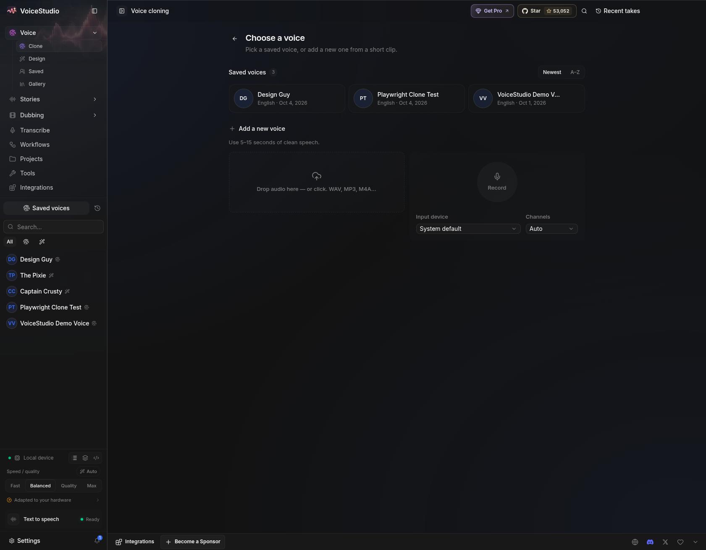
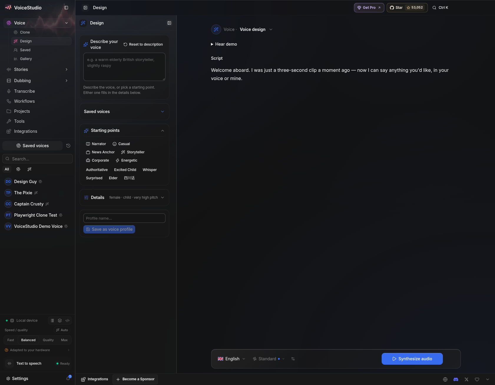
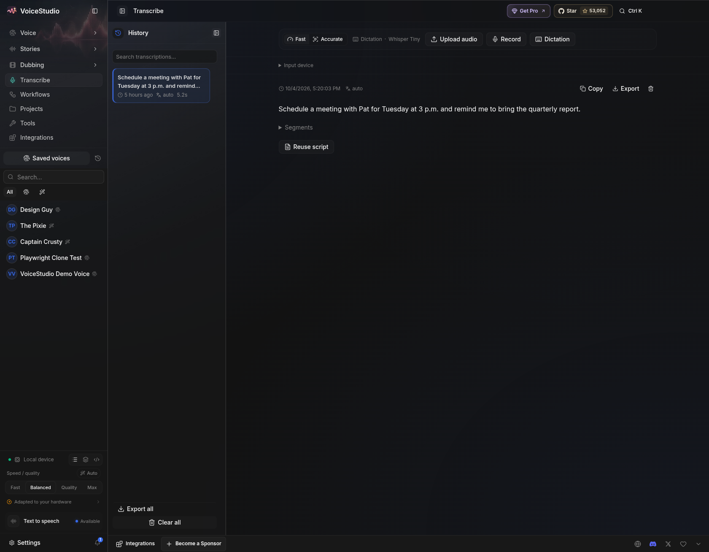
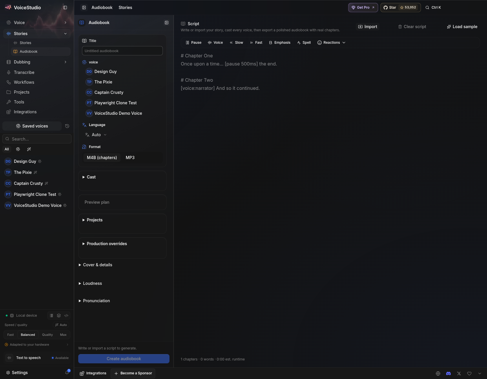
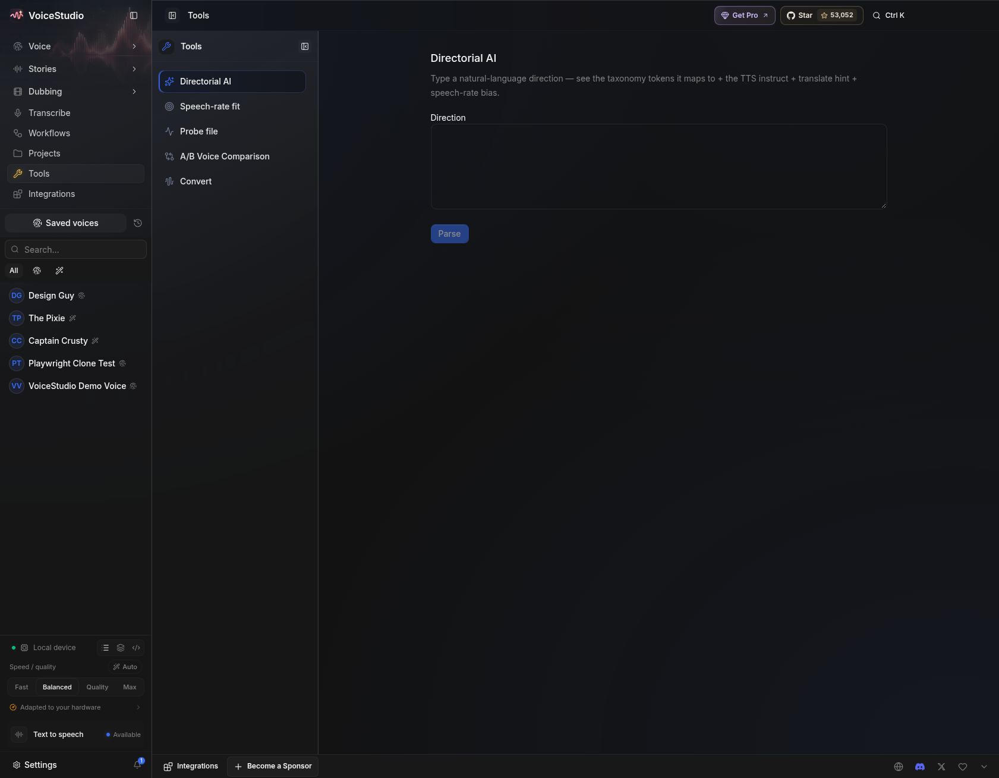
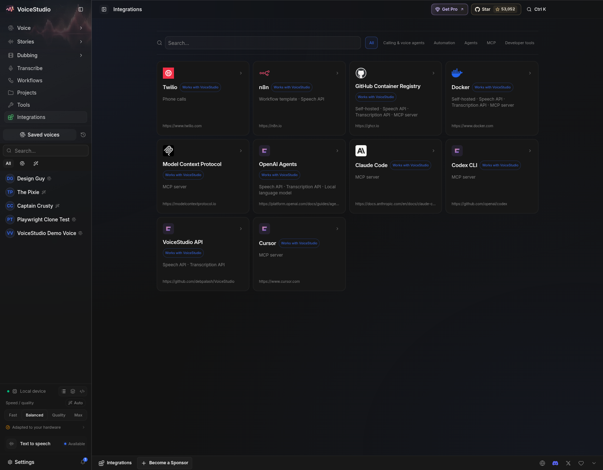
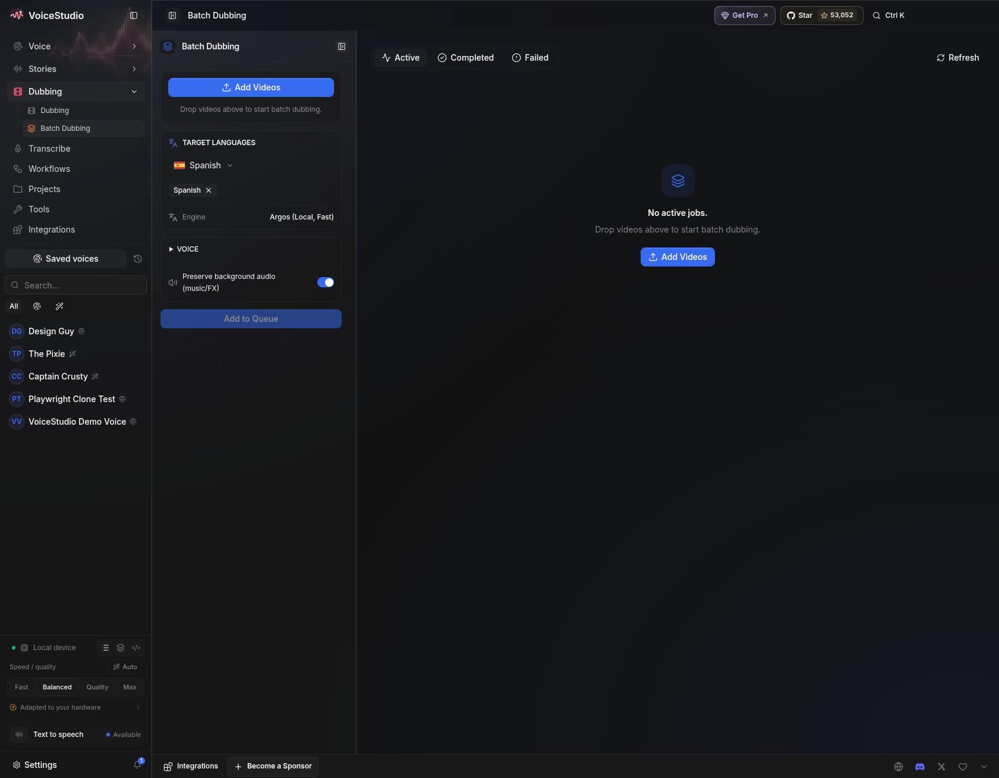
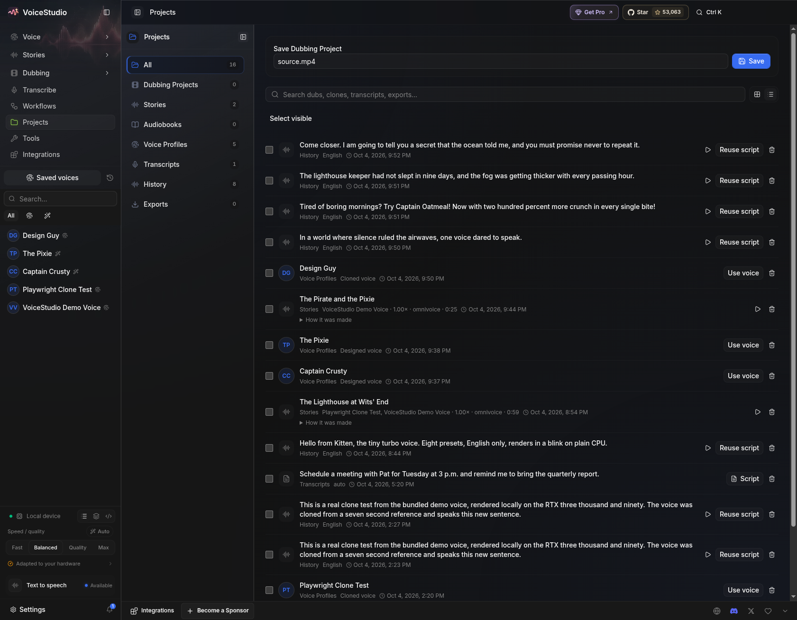
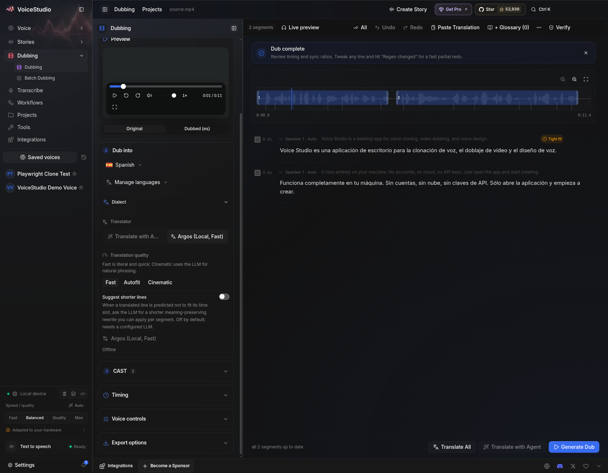

🎬 Watch the tour (30 seconds)
Clone → Design → Transcribe → Audiobooks → Tools → Integrations → Batch → Projects → Dub → Story, ten workspaces in thirty seconds.
🌱 Beginner? Start here (2 minutes)
1. Ears (ASR)
Sound → text. Upload a recording, get the sentence back. Play experiment 6's source idea below, then read its transcript.
2. Brain (translation)
Text in one language → text in another. Offline Argos packs do English ↔ Spanish and English ↔ Arabic.
3. Mouth (TTS)
Text → spoken audio. Cloning copies a person from 5–15 seconds; design invents one from words.
A dub is simply ears → brain → mouth, timed to video. A story is one mouth, many voices. Now press play on everything below — you will hear each stage.
🔊 Listen — every experiment
01 · Cloned voice, new sentence (11.9s)
7-second sample → reusable voice.
02 · Designed voice (7.1s)
Middle-aged, low pitch — no sample needed.
03 · KittenTTS preset (11.2s)
Instant English, CPU-only, no cloning.
04 · Spanish dub mix
Full pipeline: transcribe → translate → speak → mux.
05–06 · Arabic segments (6.0s + 8.7s)
First Arabic render, slot-fitted.
08 · Arabic v2, natural rate (15.4s)
Fixed wording, no speedup. Compare with 05–06.
07 · Lighthouse audiobook (0:59)
Chapters, pauses, laughter and sigh markup.
09 · Pirate & Pixie, 3 voices (0:24)
Narrator + villain + child, one render.
10–13 · Design Guy sessions
Trailer, ad, story opening, secret — same voice.
🖼️ See — the workspaces









✨ Features at a glance
| Feature | What you do | Try |
|---|---|---|
| 🎤 Clone | Copy a voice from a short sample | audio/01, 10–13 |
| 🎨 Design | Invent a voice from words | audio/02 |
| ⚡ Presets | 8 instant English voices, CPU | audio/03 |
| 🎞️ Dub ES | Video in Spanish, fully local | audio/04 |
| 🌍 Dub AR | Arabic speech + natural timing fix | audio/05–06, 08 |
| 🎧 Transcribe | 3 engines, same clips compared | README §6 |
| 📖 Stories | Multi-voice scripts → M4B | audio/07, 09 |
🧑🤝🧑 Who is this for
🎬 YouTubers
Spanish + Arabic voice tracks overnight, no per-minute bill.
📚 Storytellers
Villain, child, narrator — one render, chapters included.
🎙️ Podcasters
Clone yourself once; generate pickups forever.
🧏 Note-takers
Recordings in, private text out, offline.
🛠️ Builders
Reproduce via API, extend with models. See README + HARDWARE.md.
🎓 Students
Hear the ASR → translate → TTS chain, then explain it aloud.
🧠 Models & hardware
OmniVoice 2.4 GB · Whisper large-v3 2.9 GB · Turbo 1.6 GB · sherpa-tiny 245 MB · Parakeet 682 MB · KittenTTS 110 MB · Argos pairs ~100–200 MB. Total ≈ 8.6 GB. Sweet spot: 8 GB+ VRAM NVIDIA + 16 GB RAM. Full table: HARDWARE.md. Reproduce steps: README.